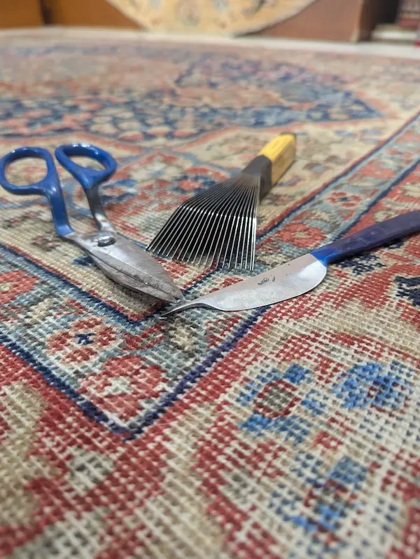

Lavaggio e restauro tappeti a Verona
Ogni tappeto ha una storia, materiali e condizioni differenti. Per questo, prima di intervenire, preferiamo osservarlo con attenzione.

Ogni tappeto ha una storia, materiali e condizioni differenti. Per questo, prima di intervenire, preferiamo osservarlo con attenzione.
Il modo Shahmansouri
Non applichiamo una soluzione uguale a ogni tappeto. Provenienza, materiali, annodatura e stato di conservazione guidano ogni scelta.

Un contatto diretto con la bottega
Osserveremo il manufatto con calma e ti indicheremo l'attenzione più adatta.
No. Il lavaggio riguarda la pulizia del tappeto, la polvere, il vello, i materiali e la freschezza del manufatto. Il restauro riguarda invece frange, bordi, buchi, lacerazioni o parti consumate e indebolite.
Sì. Per un primo orientamento sono utili fotografie del tappeto intero, del rovescio, del vello, delle frange, dei bordi e delle eventuali parti rovinate, macchiate o consumate.
Il ritiro e la consegna possono essere valutati caso per caso, in base al tappeto, alla zona e al tipo di intervento richiesto.